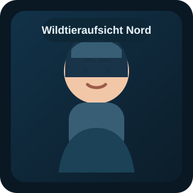
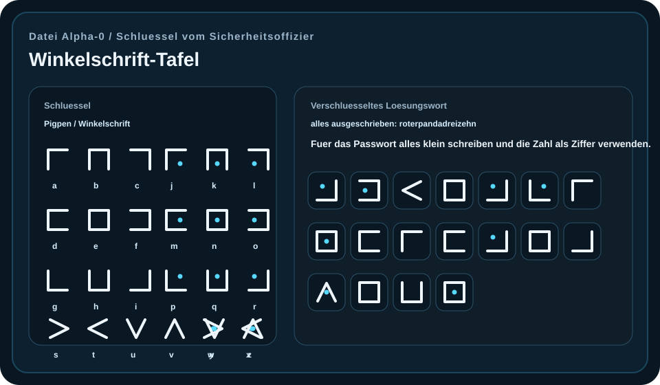
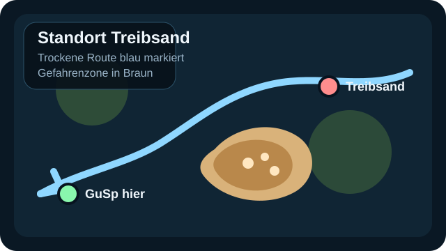

Wildtieraufsicht Nord
Direktkontakt Einsatz
06702069205
Wildtiersichtung melden, Standort nennen und auf weitere Anweisung warten.
Geschuetzter Zugriff
Entschluessle zuerst die Winkelschrift. Wenn der Schluessel unbekannt ist, erhaelt ihn die Einsatzleitung vom Sicherheitsoffizier.
Winkelschrift

Einsatzleitung
Trage die Namen der Einsatzleitung ein. Es koennen 1 bis 5 Personen teilnehmen. Mehrere Namen bitte mit Komma trennen.
Phase 1
Hilf den GuSp, die Erste Hilfe zu finden.
Sturmwarnung
Vor Phase 2 muss die Sturmwarnung beachtet werden.
Beobachte den Sturm waehrend des Heimwegs laufend mit dem zweiten Laptop.
Bitte den Sicherheitsoffizier um einen zweiten Laptop und eine Einschulung.
Mit dem zweiten Laptop behaltet ihr den Sturm waehrend des Rueckwegs im Blick.
Kommt der Sturm den GuSp zu nahe, faellt der Funkkontakt aus und die GuSp koennen Schaden davontragen.
Wildtiersichtung
Bis die Wildtieraufsicht vor Ort ist, spielt ihr die Szene Braunbaer versus GuSp.
Ruft die Wildtieraufsicht an, sobald die Telefonnummer ermittelt wurde.
Die Telefonnummer wird ueber das folgende Raetsel freigeschaltet.

Wildtieraufsicht Nord
06702069205
Wildtiersichtung melden, Standort nennen und auf weitere Anweisung warten.
Einsatzlogbuch
Die erste Ziffer wird entsperrt.
Letzte Warnung
Die GuSp stehen vor einem Treibsandfeld. Der Pilot erkennt die Gefahr rechtzeitig. Jetzt muessen sie den Bereich mit Treibsand-Brettern ueberqueren, die nur in begrenzter Anzahl vorhanden sind.

Status
Alle GuSp wurden versorgt. Der Rueckweg kann jetzt vorbereitet werden.
Notfallprotokoll Alpha-7
Einsatzleitung, ein Flug mit GuSp nach Nordschweden endet tief in der Wildnis. Ab jetzt fuehrt ihr die Rettungsmission.
01 Start in Wien
Die GuSp treffen sich am Flughafen Wien und steigen in eine kleine Propellermaschine. Ziel ist ein entlegenes Dorf im Norden von Schweden.
02 Ueber Schweden
Stunde um Stunde zieht die schwedische Wildnis unter dem Flieger vorbei. Die Vorfreude auf das Treffen mit der schwedischen Gruppe waechst.
03 Alarm
Ein Alarm piepst. Flugbegleiterinnen werden hektisch, die Maschine bebt und in der Kabine breitet sich Panik aus.
04 Absturz
Ein letzter harter Ruck. Dann Stille. Die Maschine ist mitten in der schwedischen Wildnis abgestuerzt und die GuSp brauchen sofort Hilfe.
Mission
Holt die Funkgeraete beim Sicherheitsoffizier.
Funkgeraete vom Sicherheitsoffizier uebernehmen.
Frage den Piloten, wie viele GuSp und wie viele Besatzungsmitglieder an Bord waren.
Versorge die GuSp in drei Schritten: Erste Hilfe, Nahrung, Waerme.
Loese zuerst die Rechenaufgabe. Dann bekommst du den Hinweis zur Rueckweg-Karte.
Leite die GuSp zum Grenzfluss. Der Weg ist auf der Rueckweg-Karte markiert.
Entschluessle die Mail in Morsecode und gib den Satz an die GuSp weiter.
Betreff: Grenzfluss
Nachricht:
. .-. --.. .-.- .... .-.. . / -.. . -- / .-- .-.- -.-. .... - . .-. / ..-. --- .-.. --. . -. -.. . -. / .-- .. - --.. ---... / ..-. .-.- .... .-. - / . .. -. / .--. .- -. -.. .- / ..--. -... . .-. / -.. .. . / ... - .-. .- ... ... . / -....- / -... .- -- -... ..- ...
Wenn der Waechter den Satz gehoert hat, koennen die GuSp die schmale Bruecke ueber den Grenzfluss ueberqueren.
Empfehlung: Fuehre die GuSp entlang der vorgeschlagenen Route weiter Richtung Zivilisation.
Achte weiter auf das Wetter und auf Wildtiere.
Sollten Wildtiere gesichtet werden, druecke sofort den Knopf Wildtiersichtung.
Achte auf Treibsand.
Der Pilot erkennt die Gefahr rechtzeitig.
Die GuSp und die Besatzung haben die Zivilisation erreicht. Schliesse den Rueckweg offiziell ab.
Trage die Vornamen aller Geretteten einzeln ein. So seht ihr, ob alle GuSp und die Besatzung zurueck sind.
Mission abgeschlossen
Alle GuSp und Besatzungsmitglieder sind sicher zurueck in der Zivilisation.